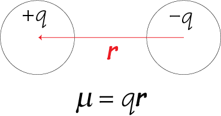
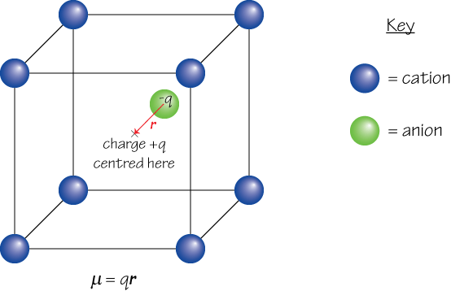
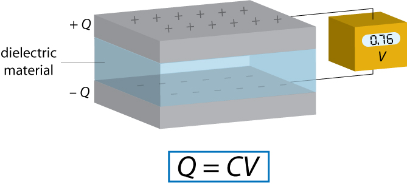
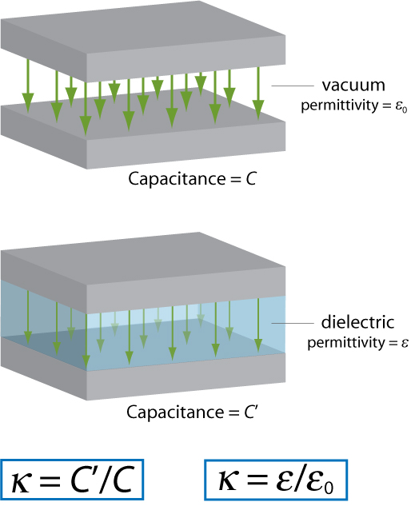
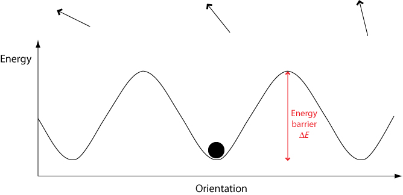
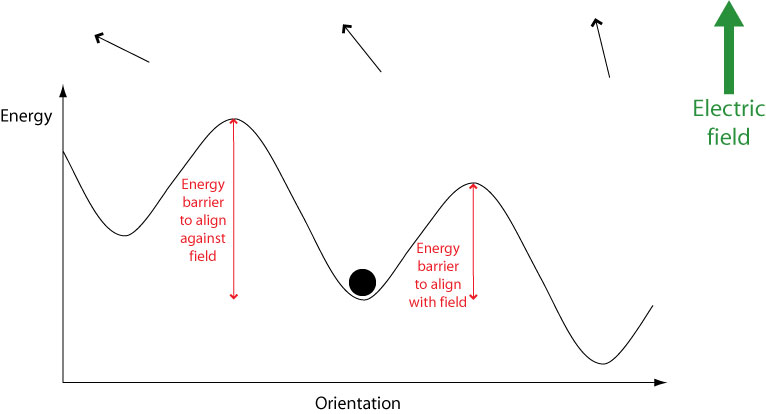
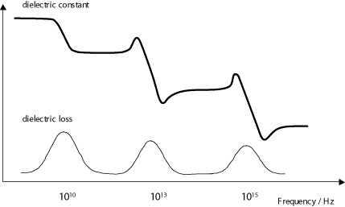
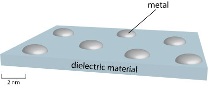

The original, as published: DoITPoMS, University of Cambridge, Dielectric Materials. CC BY-NC-SA 4.0, https://creativecommons.org/licenses/by-nc-sa/4.0/. As published, from https://www.doitpoms.ac.uk/tlplib/dielectrics/ https://www.doitpoms.ac.uk/tlplib/dielectrics/
A dielectric material is any material that supports charge without conducting it to a significant degree. In principle all insulators are dielectric, although the capacity to support charge varies greatly between different insulators for reasons that will be examined in this TLP.
Dielectric materials are used in many applications, from simple electrical insulation to sensors and circuit components.
A dielectric supports charge by acquiring a polarisation in an electric field, whereby one surface develops a net positive charge while the opposite surface develops a net negative charge. This is made possible by the presence of electric dipoles – two opposite charges separated by a certain distance – on a microscopic scale.
A mathematical treatment of dipole moment can be found in the TLP on ferroelectrics. For the purposes of this TLP it is worth noting that a dipole can be considered in two ways:
1. If two discrete charged particles of opposite charges are separated by a certain distance, a dipole moment μ arises.

2. If the centre of positive charge within a given region and the centre of negative charge within the same region are not in the same position, a dipole moment μ arises. For example, in the diagram below the centre of positive charge from the 8 cations shown is at X, while the centre of negative charge is located some distance away on the anion.

The second view of dipole moment is more useful, since it can be applied over a large area containing many charges in order to find the net dipole moment of the material, and can also be used in situations where it is inappropriate to consider the charges as belonging to discrete particles – e.g. in the case of the electron cloud that surrounds the nucleus in an atom, which must be described by a wavefunction.
Note that in the equation for dipole moment, r is a vector (the sign convention is that r points from negative to positive charge) therefore the dipole moment μ is also a vector. The polarisation of a material is simply the total dipole moment for a unit volume.
\[P = \frac{{\sum \mu }}{V}\] where V is the overall volume of the sample.
Since Σμ is a vector sum, a material may contain dipoles without having any net polarisation, since dipole moments can cancel out.
There are three main polarisation mechanisms that can occur within a dielectric material: electronic polarisation, ionic polarisation (sometimes referred to as atomic polarisation) and orientational polarisation. The animation below illustrates how each of these mechanisms functions on the microscopic scale.
All non-conducting materials are capable of electronic polarisation, which is why all insulators are dielectric to some degree. In contrast, the ionic and orientational modes are only available to materials possessing ions and permanent dipoles respectively.
Another contribution to polarization is space charge, or the accumulation of mobile charges at structural surfaces and interfaces. Rather than being a direct property of a material this is only a feature of heterostructures, and hence is not discussed further here.
A capacitor is a device used for storing charge. It normally consists of two conducting plates with a dielectric material between them, although an “empty capacitor” – one with a vacuum between the plates – may also be used in some applications.
Each capacitor has a capacitance C, the standard units of which are Farads (F). The capacitance is defined by the relationship Q = C V where Q is the charge on each capacitor plate and V is the voltage between capacitor plates. Therefore 1 F = 1 CV-1.

The capacitance is affected by various factors, such as the capacitor geometry, however here we shall only deal with the effect of the dielectric material chosen to occupy the space between the plates.
Increasing the capacitance in this way is desirable, since it allows a greater electric charge to be stored for a given field strength.
The dielectric constant of a material provides a measure of its effect on a capacitor. It is the ratio of the capacitance of a capacitor containing the dielectric to that of an identical but empty capacitor.
An alternative definition of the dielectric constant relates to the permittivity of the material. Permittivity is a quantity that describes the effect of a material on an electric field: the higher the permittivity, the more the material tends to reduce any field set up in it. Since the dielectric material reduces the field by becoming polarised, an entirely equivalent definition is that the permittivity expresses the ability of a material to polarise in response to an applied field. The dielectric constant (sometimes called the ‘relative permittivity’) is the ratio of the permittivity of the dielectric to the permittivity of a vacuum, so the greater the polarisation developed by a material in an applied field of given strength, the greater the dielectric constant will be.
There is no standard symbol for the dielectric constant – you may see it referred to as κ, ε, ε′ or εr. In this TLP κ shall be used to avoid confusion with the absolute permittivity, which may also be given the symbol ε.
The two definitions of the dielectric constant are illustrated by the diagram below (the green arrows represent the electric field).

In general, the more available polarisation mechanisms a material possesses, the larger its net polarisation in a given field will be and hence the larger its dielectric constant will be.
The dielectric constant of a material and its refractive index are closely linked by the equation κ = n2 (click here for derivation). However, care must be taken in applying this equation. It is only strictly accurate when the dielectric constant and the refractive index are measured under the same conditions. Specifically, since the dielectric constant can vary significantly with frequency (for reasons discussed in the next section of this TLP), we must measure the dielectric constant under alternating current at the same frequency that we measure the refractive index at – the frequency of visible light, ~1015 Hz. However, quoted values of the dielectric constant normally refer to the static dielectric constant – that is, the dielectric constant under direct current. This is often very different from the value of the dielectric constant at 1015 Hz.
The exception to this is for materials that possess only the electronic mode of polarisation. For these materials, the dielectric constant does not vary significantly with frequency below visible frequencies, and κS ≈ n2 where κS is the static dielectric constant.
To summarise: the equation κ = n2 can be applied to the static dielectric constants of non-polar materials only, or to the high-frequency dielectric constants of any dielectric.
We know that a dielectric becomes polarised in an electric field. Now imagine switching the direction of the field. The direction of the polarisation will also switch in order to align with the new field. This cannot occur instantaneously: some time is needed for the movement of charges or rotation of dipoles.
If the field is switched, there is a characteristic time that the orientational polarisation (or average dipole orientation) takes to adjust, called the relaxation time. Typical relaxation times are ~10-11 s. Therefore, if the electric field switches direction at a frequency higher than ~1011 Hz, the dipole orientation cannot ‘keep up’ with the alternating field, the polarisation direction is unable to remain aligned with the field, and this polarisation mechanism ceases to contribute to the polarisation of the dielectric.
In an alternating electric field both the ionic and the electronic polarisation mechanisms can be thought of as driven damped harmonic oscillators (like a mass on a spring), and the frequency dependence is governed by resonance phenomena. This leads to peaks in a plot of dielectric constant versus frequency, at the resonance frequencies of the ionic and electronic polarisation modes. A dip appears at frequencies just above each resonance peak, which is a general phenomenon of all damped resonance responses, corresponding to the response of the system being out of phase with the driving force (we shall not go into the mathematical proof of this here). In this case, in the areas of the dips, the polarisation lags behind the field. At higher frequencies the movement of charge cannot keep up with the alternating field, and the polarisation mechanism ceases to contribute to the polarisation of the dielectric.
As frequency increases, the material’s net polarisation drops as each polarisation mechanism ceases to contribute, and hence its dielectric constant drops. The animation below illustrates these effects.
At sufficiently high frequencies (above ~1015 Hz), none of the polarisation mechanisms are able to switch rapidly enough to remain in step with the field. The material no longer possesses the ability to polarise, and the dielectric constant drops to 1 – the same as that of a vacuum.
The resonances of the ionic and electronic polarization mechanisms are illustrated below.
We have already seen that the more available polarisation mechanisms a material possesses, the larger its dielectric constant will be. For example, materials with permanent dipoles have larger dielectric constants than similar, non-polar materials.
In addition, the more easily the various polarisation mechanisms can act, the larger the dielectric constant will be. For example, among polymers, the more mobile the chains are (i.e. the lower the degree of crystallinity) the higher the dielectric constant will be.
For polar structures, the magnitude of the dipole also affects the magnitude of polarisation achievable, and hence the dielectric constant. Crystals with non-centrosymmetric structures such as barium titanate have especially large spontaneous polarisations and so correspondingly large dielectric constants. Conversely, a polar gas tends to have smaller dipoles, and its low density also means there is less to polarise, therefore polar gases have lower dielectric constants than polar solids or liquids. The density argument also applies for non-polar gases when compared with non-polar solids or liquids.
For materials that possess permanent dipoles, there is a significant variation of the dielectric constant with temperature. This is due to the effect of heat on orientational polarisation.
However, this does not mean that the dielectric constant will increase continually as temperature is lowered. There are several discontinuities in the dielectric constant as temperature changes. First of all, the dielectric constant will change suddenly at phase boundaries. This is because the structure changes in a phase change and, as we have seen above, the dielectric constant is strongly dependent on the structure. Whether κ will increase or decrease at a given phase change depends on the exact two phases involved.
There is also a sharp decrease in κ at a temperature some distance below the freezing point. Let us now examine the reason for this.
In a crystalline solid, there are only certain orientations permitted by the lattice. To switch between these different orientations, a molecule must overcome a certain energy barrier ΔE.

When an electric field is applied, the potential energy of orientations aligned with the field is lowered while the energy of orientations aligned against the field is raised. This means that less energy is required to switch to orientations aligned with the field, and more energy required to switch to orientations aligned against the field.

Therefore over time molecules will become aligned with the field. However, they must still overcome an energy barrier in order to do this. If a molecule possesses an energy less than the height of any energy barrier, it cannot cross the energy barrier therefore cannot change its orientation. Hence the orientational mode becomes “frozen out” and can no longer contribute to overall polarisation, leading to a drop in the dielectric constant.
These effects are summarised in the graph below.
An efficient dielectric supports a varying charge with minimal dissipation of energy in the form of heat. There are two main forms of loss that may dissipate energy within a dielectric. In conduction loss, a flow of charge through the material causes energy dissipation. Dielectric loss is the dissipation of energy through the movement of charges in an alternating electromagnetic field as polarisation switches direction.
Dielectric loss is especially high around the relaxation or resonance frequencies of the polarisation mechanisms as the polarisation lags behind the applied field, causing an interaction between the field and the dielectric’s polarisation that results in heating. This is illustrated by the diagram below (recall that the dielectric constant drops as each polarisation mechanism becomes unable to keep up with the switching electric field.)

Dielectric loss tends to be higher in materials with higher dielectric constants. This is the downside of using these materials in practical applications.
Dielectric loss is utilised to heat food in a microwave oven: the frequency of the microwaves used is close to the relaxation frequency of the orientational polarisation mechanism in water, meaning that any water present absorbs a lot of energy that is then dissipated as heat. The exact frequency used is slightly away from the frequency at which maximum dielectric loss occurs in water to ensure that the microwaves are not all absorbed by the first layer of water they encounter, therefore allowing more even heating of the food.
At high electric fields, a material that is normally an electrical insulator may begin to conduct electricity – i.e. it ceases to act as a dielectric. This phenomenon is known as dielectric breakdown.
The mechanism behind dielectric breakdown can best be understood using band theory. A detailed explanation of this can be found in the TLP on semiconductors although not all of this is relevant to the content of this TLP, therefore the aspects of band theory needed to understand dielectric breakdown are presented here.
For each material, there is a characteristic field strength needed to cause dielectric breakdown. This is referred to as the breakdown field or dielectric strength. Typically values of the dielectric strength lie in the range 106 – 109 Vm-1. The exact value of the dielectric strength depends on many factors – most obviously the size of the energy gap, but also the geometry and microstructure of the sample and the conditions it is subjected to.
The phenomenon of dielectric breakdown is utilised in cigarette lighters and similar devices where a spark must be produced in order to ignite the fuel. The “spark gap” is a small air gap between two electrodes. Charge is built up on the electrodes on either side of the spark gap until the strength of the field across the spark gap exceeds the dielectric strength of air (the mechanism used to create this field is not directly relevant to this TLP, but interested readers may find an explanation of it here). At this point the air within the spark gap becomes capable of conduction, resulting in a spark.
A major use of dielectrics is in fabricating capacitors. These have many uses including storage of energy in the electric field between the plates, filtering out noise from signals as part of a resonant circuit, and supplying a burst of power to another component.
The larger the dielectric constant, the more charge the capacitor can store in a given field, therefore ceramics with non-centrosymmetric structures, such as the titanates of group 2 metals, are commonly used. In practice, the material in a capacitor is in fact often a mixture of several such ceramics. This is due to the variation of the dielectric constant with temperature discussed earlier. It is generally desirable for the capacitance to be relatively independent of temperature; therefore modern capacitors combine several materials with different temperature dependences, resulting in a capacitance that shows only small, approximately linear temperature-related variations.
Of course in some cases a low dielectric loss is more important than a high capacitance, and therefore materials with lower values of κ – and correspondingly lower dielectric losses – may be used for these situations.
Some applications of dielectrics rely on their electrically insulating properties rather than ability to store charge, so high electrical resistivity and low dielectric loss are the most desirable properties here. The most obvious of these uses is insulation for wires, cables etc., but there are also applications in sensor devices. For example, it is possible to make a type of strain gauge by evaporating a small amount of metal onto the surface of a thin sheet of dielectric material.

Electrons may travel across the metal by normal conduction, and through the intervening dielectric material by a phenomenon known as quantum tunnelling. A mathematical treatment of this phenomenon is outside the scope of this TLP; simply note that it allows particles to travel between two “permitted” regions that are separated by a “forbidden” region and that the extent to which tunnelling occurs decreases sharply as distance between the permitted regions increases. In this case the permitted regions are the solidified metal droplets, and the forbidden region is the high-resistance dielectric material.
If the dielectric material is strained, it will bow causing the distances between the metal islands to change. This has a large impact on the extent to which electrons can tunnel between the islands, and thus a large change in current is observed. Therefore the above device makes an effective strain gauge.
The refractive index of a material, n, is defined as the ratio of the speed of light in a vacuum to the speed of light in that material.
$$n = {c \over {{c_{\rm{m}}}}}$$ where c is the speed of light in a vacuum and cm the speed of light in the material.
It is possible to derive another equation for the speed of light, this time in terms of the electric permittivity (ε) and magnetic permeability (μ) of the material. For this, we need Maxwell’s equations.
$$\nabla \times {\bf{E}} = - {{\partial {\bf{B}}} \over {\partial t}}$$ (1)
$$\nabla \times {\bf{B}} = \mu \varepsilon {{\partial {\bf{E}}} \over {\partial t}}$$ (2)
Taking the curl of both sides of (1) allows us to combine (1) and (2):
$$\eqalign{ \nabla \times (\nabla \times {\bf{E}}) = & - {{\partial (\nabla \times {\bf{B}})} \over {\partial t}} \cr = & - \mu \varepsilon {{{\partial ^2}{\bf{E}}} \over {\partial {t^2}}} \cr} $$
In general for any vector a:
$$\nabla \times (\nabla \times {\bf{a}}) = - {\nabla ^2}{\bf{a}} + \nabla \cdot (\nabla \cdot {\bf{a}})$$
Now in a vacuum, \(\nabla \cdot {\bf{E}} = 0\). In this case the above equation becomes:
$${\nabla ^2}{\bf{E}} = {\mu _0}{\varepsilon _0}{{{\partial ^2}{\bf{E}}} \over {\partial {t^2}}}$$
Which is the wave equation in three dimensions. Let us consider the 1D equivalent, as this is easier to solve.
$${{{\partial ^2}E} \over {\partial {x^2}}} = {\mu _0}{\varepsilon _0}{{{\partial ^2}E} \over {\partial {t^2}}}$$
A possible solution to this equation is a sinusoidal wave of wavelength λ and speed c:
$$E = {E_0}\sin \left( {2\pi {{x - ct} \over \lambda }} \right)$$
Differentiating with respect to x and t:
$$\eqalign{ & {{{\partial ^2}E} \over {\partial {x^2}}} = - {E_0}{\left( {{{2\pi } \over \lambda }} \right)^2}\sin \left( {2\pi {{x - ct} \over \lambda }} \right) \cr & {{{\partial ^2}E} \over {\partial {t^2}}} = - {E_0}{\left( {{{2\pi c} \over \lambda }} \right)^2}\sin \left( {2\pi {{x - ct} \over \lambda }} \right) \cr} $$
And substituting back into the 1D wave equation above:
$$ - {E_0}{\left( {{{2\pi } \over \lambda }} \right)^2}\sin \left( {2\pi {{x - ct} \over \lambda }} \right) = - {\mu _0}{\varepsilon _0}{E_0}{\left( {{{2\pi c} \over \lambda }} \right)^2}\sin \left( {2\pi {{x - ct} \over \lambda }} \right)$$
Which can be simplified and rearranged to give an expression for c, the speed of light in a vacuum:
$$c = {({\mu _0}{\varepsilon _0})^{{\raise0.7ex\hbox{${ - 1}$} \!\mathord{\left/ {\vphantom {{ - 1} 2}}\right.\kern-0em} \!\lower0.7ex\hbox{$2$}}}}$$
It turns out that a similar equation is applicable to the speed of light in any material, cm:
$${c_{\rm{m}}} = {(\mu \varepsilon )^{{\raise0.7ex\hbox{${ - 1}$} \!\mathord{\left/ {\vphantom {{ - 1} 2}}\right.\kern-0em} \!\lower0.7ex\hbox{$2$}}}}$$
For a material that is not magnetic the permeability is μ0, so that:
$${c_{\rm{m}}} = {({\mu _0}\varepsilon )^{{\raise0.7ex\hbox{${ - 1}$} \!\mathord{\left/ {\vphantom {{ - 1} 2}}\right.\kern-0em} \!\lower0.7ex\hbox{$2$}}}}$$ for any non-magnetic material.
Using the expressions for c and cm, the refractive index of the material can be expressed in terms of ε and μ.
$$\eqalign{ & n = {\left( {{{{\mu _0}{\varepsilon _0}} \over {{\mu _0}\varepsilon }}} \right)^{{\raise0.7ex\hbox{${ - 1}$} \!\mathord{\left/ {\vphantom {{ - 1} 2}}\right.\kern-0em} \!\lower0.7ex\hbox{$2$}}}} \cr & n = {\left( {{\varepsilon \over {{\varepsilon _0}}}} \right)^{{\raise0.7ex\hbox{$1$} \!\mathord{\left/ {\vphantom {1 2}}\right.\kern-0em} \!\lower0.7ex\hbox{$2$}}}} \cr} $$
Finally, recall the earlier definition of the dielectric constant in terms of permittivity:
$$\kappa = {\varepsilon \over {{\varepsilon _0}}}$$
Therefore κ = n2 .
Academic consultant: Zoe Barber (University of Cambridge)
Content development: Anna Kalorkoti
Web development: Lianne Sallows and David Brook
This DoITPoMS TLP was funded by the UK Centre for Materials Education and the Department of Materials Science and Metallurgy, University of Cambridge.